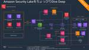
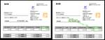
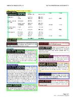
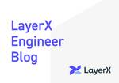

LayerX エンジニアブログ
https://tech.layerx.co.jp/
LayerX の エンジニアブログです。
フィード
生産性とガバナンスを両立したグループ管理のため、SmartHR上の属性情報を元に擬似的なABACシステムを構築した話 6
6
LayerX エンジニアブログ
すべての経済活動を、デジタル化するために、すべての業務活動を、デジタル化したいコーポレートエンジニアリング室の @yuya-takeyama です。 7月はBet Technology Monthということでブログがたくさん出てくる月です。 そして7月といえば、第二四半期の始まりですね。 今月から転職や異動によって新しい環境で働き始める方も多いのではないでしょうか。 LayerXでは毎月のように入社・異動があるため、その度にやらないといけないことがあります。 それは、各種グループのメンバーの更新です。 LayerXにおけるグループメンバーの管理 LayerXではID基盤としてMicrosoft…
9時間前

SIEMからデータ基盤へ - Amazon Security Lakeを試してる話
LayerX エンジニアブログ
LayerX Fintech事業部*1ので、ガバナンス・コンプラエンジニアリングをしている @ken5scal です。 はじめに 本ブログは、以前執筆した「SIEMの限界」から「データ基盤への道」への具体的な取り組み、いわば試行錯誤の途中経過をお伝えするものです。今後も継続的に試行錯誤や改善策をお届けしていく予定ですので、この過程に興味をお持ちの方は、ぜひフォローをお願いいたします。 tech.layerx.co.jp 「SIEMの限界」で述べた通り、当社は「メンテナンスや運用、対応策にかかるコストと工数に比して、自社の持てるコントロールや自由度が限定的」という課題を既存のSIEMに感じていま…
2日前
今LayerXのバクラク事業部 機械学習グループに入るべき理由(2024年版) 16
LayerX エンジニアブログ
すべての経済活動を、デジタル化したい松村(@yu-ya4)です。LayerXのバクラク事業部機械学習グループにおいて機械学習エンジニア兼マネージャーを務めています。 先日、代表の福島(@fukkyy)が以下のnoteを公開しました。LayerXの発信を見てくださっている社外の方々から「もう入るには遅い会社だよね?」と言われることが最近増えたことに対して、LayerXがまだ全然完成されていない、成長機会だらけのこれからの会社であるということを綴った内容となります。 note.com 今回はこの内容を受け、LayerXのバクラク事業部においてAIや機械学習を活用した機能の開発・顧客価値の提供に責任…
2日前

バクラクのAI-OCRが扱う問題の複雑さ 28
LayerX エンジニアブログ
こんにちは。 LayerXのバクラク事業部 機械学習チームのテックリードを務めております機械学習エンジニアの島越（@nt_4o54）です。 最近、カジュアル面談や学会などで「AI-OCRってもうほぼ完成で、運用フェーズですよね」「やることあるんですか？」など頻繁に聞かれることがあります。 「いやいや課題が山のようにあるんです」という話をいつもしているので、今回は我々が作っているAI-OCRがどれだけ複雑で難しい問題を扱っているか、という部分についてお話しさせていただければなと思います。 少し、経理ドメインの話が多く恐縮ですが、お付き合いいただけると嬉しいです。 AI-OCRについて AI-OC…
2日前
機械学習とビジネスゴールのはざまで 12
LayerX エンジニアブログ
機械学習をプロダクトに取り入れて磨き上げているいるみなさん。機械学習モデルのオフライン評価とビジネス上のKPIとを近づける難しさを感じてませんか？ はじめに 深澤 (@qluto) です。 LayerXという会社で、経理業務をはじめとした業務支援を行うバクラクシリーズの開発に携わっています。私はその中でも、非定型の書類から的確に情報を読み取るAI-OCR機能の開発を担当しています。 私は、機械学習を根幹に据えつつ、ビジネス上や直接的なユーザーの課題解決のために複合的な問題に対処してきたソフトウェアエンジニアです。 今回は、機械学習とビジネスゴールの狭間で生じがちな問題を俯瞰し、バクラクのAI-…
2日前

Document Layout Analysisに物体検出を利用したDocument Object Detectionのすゝめ 32
LayerX エンジニアブログ
はじめに こんにちは。バクラク事業部 機械学習チームの機械学習エンジニアの上川(@kamikawa)です。 バクラクではAI-OCRという機能を用いて、請求書や領収書をはじめとする書類にOCRを実行し、書類日付や支払い金額などの項目内容をサジェストすることで、お客様が手入力する手間を省いています。 書類から特定の項目を抽出する方法は、自然言語処理や画像認識、近年はマルチモーダルな手法などたくさんあるのですが、今回は項目抽出のための物体検出モデルを構築するまでの手順について紹介します。 Document Layout Analysisとは Document Layout Analysisとは、文…
3日前
開発生産性Conference 2024にシルバースポンサーとして協賛 & 1名登壇します 1
LayerX エンジニアブログ
こんにちは！すべての経済活動を、デジタル化したい Engineering Officeの @serima です。 LayerXは2024/06/28から開催される開発生産性Conference 2024にシルバースポンサーとして協賛し、ブース出展を行います。また、バクラク事業部のエンジニアリングマネージャーがスポンサーセッション枠で登壇します！ dev-productivity-con.findy-code.io 登壇内容について LayerXからはバクラク事業部 プロダクト開発部 カード開発グループ Engineering Managerの高江 (@shnjtk) が「爆速開発文化を支えるP…
6日前

データカタログにConnected SheetsやLooker Studioの情報を取り込んでレポートのデータソースを追跡する 7
LayerX エンジニアブログ
はじめに こんにちは！バクラク事業部 機械学習・データ部 データチームの@TrsNiumです。 弊社では、データの意味やデータの質、データの利活用を一元的に管理することを目的として、データカタログソリューションの一種であるOpenMetadataを導入しました。OpenMetadataを利用することで、様々な種類のデータベースやBI、CRMと連携し、データの管理と可視化を効率化しています。 弊社では主にBIツールとしてLooker Studioを使用しています。また、Google SheetsはConnected Sheetsの機能を使い、BigQuery上に構築されたデータ基盤のデータを用い…
8日前
TensorRTとTriton Inference Serverで推論サーバの性能を劇的に改善し本番導入した話 3
LayerX エンジニアブログ
機械学習エンジニアの吉田です。前回は NVIDIA Triton Inference Server の性能を検証した話を書きましたが今回はその続編となります。 tech.layerx.co.jp 前回の記事以降も継続してTriton Inference Serverの検証を重ねた結果、推論サーバの性能を大幅に改善することができ、無事本番に導入することができました。 この記事では本番導入までにどのような改善や検証を行ったのか書きたいと思います。 はじめに 背景 バクラクでは請求書OCRなどの機械学習モデルを開発しており、リアルタイムで推論結果を返す必要があります。 推論APIはNginx、Gun…
12日前

現地参加して良かった！Snowflake Data Cloud Summit 2024！
LayerX エンジニアブログ
2024年6月3日から6日にかけてサンフランシスコで開催されたSnowflake Data Cloud Summit 2024に現地参加してきました。本記事では、その様子や感想をレポートしようと思います。
19日前
Fintech事業部のtoCプロダクト『ALTERNA』のリリースから1年目までに心がけてきた 「ファクトベース」についての話
LayerX エンジニアブログ
こんにちは。 Fintech事業部こと三井物産デジタル・アセットマネジメント（以下、MDM）でCPO/CTOをやっているサルバ id:masashisalvador(@MasashiSalvador)です。 三体で大好きなのは第二巻の水滴の部分です。はやく地球三体協会（救済派）に入りたいです。 Fintech事業部では、昨年5月に個人のお客様向けの資産運用サービス、ALTERNA（オルタナ） をリリースしました。何もない状態から金融サービスを世の中に届け、幸福なことに結構な数のお客様にご利用頂いていて、0→1のフェーズから、1→10のフェーズへと事業のフェーズが転換しつつあります。 「すべての…
22日前
Go Conference 2024 に Bronze スポンサーとして協賛 & 1名登壇します #gocon
LayerX エンジニアブログ
こんにちは！Engineering Office の @serima です。 LayerX は 2024/06/08(土) に開催される Go Conference 2024 に Bronze スポンサーとして協賛。またメンバーが 1 名登壇します！ gocon.jp Go Conference 2022 Spring、Go Conference 2023 Online につづき、LayerX としては今回が 3 回目の協賛となります！ LayerX と Go LayerX では、社内のほぼすべてのプロジェクトのサーバーサイドで Go を利用しています。 たとえば「バクラク」シリーズでは、バッ…
1ヶ月前
【JSAI2024参加レポート】LayerXにおけるAI・機械学習技術の活用と展望の発表内容やセッションの紹介など
LayerX エンジニアブログ
機械学習エンジニアの上川(@yuta_kamikawa)です。 この記事は2024年5月28日(火) ~ 5月31日(金)に静岡県浜松市で開催されたJSAI2024 (第38回 人工知能学会全国大会) の参加レポートとなります。 LayerXとしては、昨年に引き続きプラチナスポンサーとして協賛させていただき、企業ブースの展示とインダストリアルセッションにて技術報告をいたしました。 tech.layerx.co.jp 昨年と同様に現地とオンラインのハイブリットでの開催となり、現地会場は浜松駅から徒歩10分ほどの場所にあるアクトシティ浜松で行われました。 あいにくの天気でしたが、多くの研究者、エン…
1ヶ月前
1on1 で「センスが無い」を言語化した話
LayerX エンジニアブログ
LayerX Fintech事業部 (※) の piroshi です。 ※ 三井物産デジタル・アセットマネジメント (MDM) に出向しています。 今回は、上長の ken5 さんとの 1on1 の中で「センス」について言語化した話を紹介させていただこうと思います。 現職で実装する機会が増え、力不足から「自分にセンスが無い」と感じた時、それを曖昧な状態にせず、要素に分解して改善に繋げようとしているお話の共有です。 問題の具体例 Fintech という領域ではセキュアな業務環境が求められます。その一環として、ECS を使ったセキュリティ施策の検証を進めています。 しかし私がこれまで Docker …
1ヶ月前
CloudNative Daysで、マルチクラウド間のワークロード認証リスク評価で話した件
LayerX エンジニアブログ
LayerX Fintech事業部（※）の 鈴木 (@ken5scal )です。 ※三井物産デジタル・アセットマネジメントに出向しています。 クラウドネイティブなアーキテクチャやナレッジの共有を通じて、参加者同士が繋がり、成長しあう機会を提供する、 それがCloudNative Daysというテックカンファレンスです。 そこで（正確には「CloudNative Days Summer 2024 プレイベント@東京 (ハイブリッド開催) - connpass」ですが）、発表枠をいただけたので話してきました。 speakerdeck.com 本ブログでは、上記の発表について、改めて背景と概要につい…
1ヶ月前
JSAI2024 (第38回 人工知能学会全国大会) にプラチナスポンサーとして協賛いたします
LayerX エンジニアブログ
バクラク事業部 機械学習グループのテックリードを務めております機械学習エンジニアの島越（@nt_4o54）です。LayerXは、JSAI2024（第38回 人工知能学会全国大会）にプラチナスポンサーとして協賛いたします。LayerXがJSAIに参加するのは去年に引き続き2回目となり、本大会でも企業ブース展示とインダストリアルセッションでの発表を予定しております。 昨年の参加レポートは以下になります。 tech.layerx.co.jp 参加登録時に現地参加を希望されている方が2,800名を超えているようで、その規模の大きさが伺えます。 本年も人工知能学会の皆様との交流を深めさせていただければと…
1ヶ月前
Google ドライブにある Excel ファイルをシュッと BigQuery にロードしたときの備忘録
LayerX エンジニアブログ
こんにちは。機械学習・データ部の @irotoris です。 どこからかダウンロードしてきた Excel ファイルのデータを BigQuery に入れてほしいという話があり、Python と pandas で Excel を読み込んでシュッと BigQuery にロードしたときの作業備忘録です。 TL;DR Google Colaboratory に Google ドライブをシュッとマウントできて便利 pandas の ExcelFile() で Excel ファイルがシュッと読めて便利 備忘録 まずは人に聞いたりファイルをいくつか眺めてデータの仕様を把握します。どうやら以下のようなファイルの…
1ヶ月前
インターンによるTSKaigi 2024参加レポート！ #TSKaigi
LayerX エンジニアブログ
バクラク申請・経費精算チーム エンジニアインターンの矢田(@0e2b3c)です。 先日行われたTSKaigi 2024にスポンサーメンバーとして参加させていただいたため、参加レポートを書かせていただきます！ LayerXとTSKaigi 2024 今回のTSKaigi 2024ではゴールドスポンサーとして協賛させていただきました。 協賛の背景等についてはこちらをご覧ください。 tech.layerx.co.jp 登壇者と登壇内容 今回弊社からは@yuya_prestoがセッション枠で、@Toshi11274がスポンサーLT枠で、@minako__phが懇親会トーク枠で登壇しました。 登壇資料は…
2ヶ月前
TSKaigi 2024にゴールドスポンサー＆ブーススポンサーとして協賛します #TSKaigi
LayerX エンジニアブログ
バクラク請求書発行 エンジニアリングマネージャーの菊池 (@kichion)です。 LayerX は、TSKaigi 2024にゴールドスポンサー＆ブーススポンサーとして協賛します。 また、LayerXのソフトウェアエンドエンジニア 田中 (@ypresto)の登壇を予定しています。 タイトル：TypeScriptと型のパフォーマンス TypeScriptではそのチューリング完全な型計算能力を使って、ライブラリの利用者に高度な開発者体験を提供することができます。React、MUI、react-hook-formなどの、ジェネリクスを多用した型定義が、その最たる例です。 一方で型パズルや黒魔術な…
2ヶ月前
初開催！LayerXのエンジニア・サマーインターンにかける思い
LayerX エンジニアブログ
こんにちは、LayerX 人事・新卒エンジニア採用担当 @shiz_layerx です！ 今回は、LayerXの『新卒採用に対する考え』や、今年初開催する2職種のエンジニア・サマーインターンの内容等をお伝えしていきます。 文末には、各サマーインターンの設計責任者（マネージャー・テックリード）からのメッセージも掲載しています。ぜひご覧ください！ 全員採用！全社を挙げて『新卒採用』にも注力するLayerX 各種インターンの構成 サマーインターン（2職種）の紹介 ソフトウェアエンジニアのサマーインターン 機械学習エンジニアのサマーインターン 各インターン責任者からのコメント ソフトウェアエンジニア・…
2ヶ月前
最小権限の原則に一歩近づく - Entra ID の "Just-in-time application access with PIM for Groups" 機能の紹介
LayerX エンジニアブログ
LayerX Fintech事業部（※）の piroshi です。 ※三井物産デジタル・アセットマネジメント (MDM)に出向しています。 沖縄からリモートワークで働いており、蒸し暑い日が続いています。クーラーをつけないと寝苦しくなってきました。 ところでみなさん、特権 (ちから) が欲しいですか？ここでの権限はシステム上の各種権限です。私は小心者で、大きすぎる力は持ちたくない派です。特権をもっていると「オレは今、セキュリティリスクの塊だ...」と気になってしまい、輪をかけて夜も眠れません。 さて、Microsoft の IdP サービスである Entra ID には Privileged I…
2ヶ月前
AWS IAM PolicyのForAllValuesを勘違いしてた件
LayerX エンジニアブログ
LayerX Fintech事業部（※）で、ガバナンス・コンプラエンジニアリングをしている 鈴木 (@ken5scal )です。 ※三井物産デジタル・アセットマネジメントに出向しています。 今回は、AWS IAMポリシーの条件における「ForAllValues」の仕様を誤って理解していたことから、安全でないアクセス制御を実装していたという内容です。もし同様の勘違いをされている方がいたら参考になれば幸いです。 ユースケース AWS IAMユーザーを、ロールの trust policy がユーザーのタグで制御するケースで考えます。 具体的には、「Group A あるいは Group B」に所属し、…
2ヶ月前
Looker Studioのデータ抽出（Extract data）機能を利用してスキャン量を減らす
LayerX エンジニアブログ
Looker Studioの「データの抽出（Extract data）」機能を使用して、同一クエリの実行回数を減らし、スキャン量を削減した方法について紹介します。
2ヶ月前
SnowflakeでMicrosoft Entra IDによるSingle Sign-On及びSCIMプロビジョニングを有効化する
LayerX エンジニアブログ
SnowflakeでMicrosoft Entra IDを使ったSingle Sign-On及びSCIMプロビジョニングを有効化する方法を画像付きで詳しく説明します。
2ヶ月前
AWS知見共有会でTerraformのCI/CDパイプラインのセキュリティ等について発表してきました + GitHub新機能Push rulesについて
LayerX エンジニアブログ
先日2024/04/16にタイミーさんのオフィスで開催された、AWS知見共有会というイベントで発表してきました。この会のテーマは「運用のスケーラビリティとセキュリティ」ということで、私は「コンパウンドスタートアップのためのスケーラブルでセキュアなInfrastructure as Codeパイプラインを考える」というタイトルで発表してきています。 イベントの動画もあります。 私の発表は 1:43 ぐらいからです。 この発表については資料と動画を見ていただければ！という感じで特に付け加えることもなかったのですが、イベントの開催後にGitHubから発表された新機能Push rulesがとても便利で…
2ヶ月前
アノテーションの研究事例からLayerXにおける改善案を考える
LayerX エンジニアブログ
こんにちは！ LayerXで機械学習エンジニアをしている伊藤 (@sbrf248) です。直近はOCRモデルの学習・評価に使うデータセット周りの改善に取り組んでいます。 今回は、データセット作成におけるアノテーションに注目し、関連する研究分野や、LayerXにおける改善にどう繋げられそうかを紹介したいと思います。 アノテーションに関する研究分野 アノテーションは、機械学習に利用する教師付きデータの正解ラベルを人間が付与する作業を指します。 高い精度のモデルを作るためには高品質かつ大量のデータセットが用意できると理想ですが、人間が作業する以上一定の時間的・金銭的コストは必要になるため、品質を高め…
3ヶ月前
NVIDIA Triton Inference Server の性能検証
LayerX エンジニアブログ
機械学習エンジニアの吉田です。今回は機械学習モデルの推論サーバとして NVIDIA Triton Inference Server の性能を検証した話です。 (追記) 続編も書きました tech.layerx.co.jp 背景 バクラクでは請求書OCRをはじめとした機械学習モデルを開発していますが、これらの機械学習モデルは基本的にリアルタイムで推論結果を返す必要があります。 請求書OCRを例にとると、お客様が請求書をアップロードした際にその内容を解析し、請求書の金額や日付などを抽出します。 このような推論用のAPIサーバはNginx, Gunicorn/Uvicorn, FastAPIで実装し…
3ヶ月前
バクラクはMLOpsエンジニアを必要としています
LayerX エンジニアブログ
こんにちは。機械学習チームでソフトウェアエンジニアをしているTomoakiです。 バクラクはMLOpsエンジニアを必要としており、今回はバクラクでMLOpsをやる面白さや現状抱えている課題について紹介します。 バクラクとは bakuraku.jp バクラクは経費精算、稟議申請、法人カード、請求書処理など企業の支出関連業務をAIのサポートで簡易化、効率化するサービス群です。これにより企業は経理業務の労力を大幅に削減することが可能となります。 2021年1月に初のプロダクト「バクラク請求書受取」をリリース。その後は「バクラク申請」「バクラク経費精算」「バクラク請求書発行」「バクラクビジネスカード」…
3ヶ月前
ログ一元管理の本質とSIEMの限界 - データ基盤への道
LayerX エンジニアブログ
三井物産デジタル・アセットマネジメントで、ガバナンス・コンプラエンジニアリングをしている 鈴木 (@ken5scal )です。 いきなりですが、ログ管理はどの職種どの場面でも重要です。セキュリティにおいても、古生代よりサーバー、ネットワーク機器、アプリケーションなどから出力されるログを一元的に収集し、監視や分析を行うことで、セキュリティインシデントの早期発見や対応、コンプライアンス要件の達成が可能になります。 このようなログ一元管理を実現する代表的なソリューションは、そう、皆様よくご存知のSIEM。我らが「Security Information and Event Management」であ…
3ヶ月前